← All workProject 5 of 10
Project 05Designed and simulated, not built
Automated Conveyor Sorting System
A 1.5 m belt conveyor that measures each carton and pushes it into one of three bins with servo paddles. Designed in Inventor, with drive sizing, sort timing and a 4000-item sort simulation.
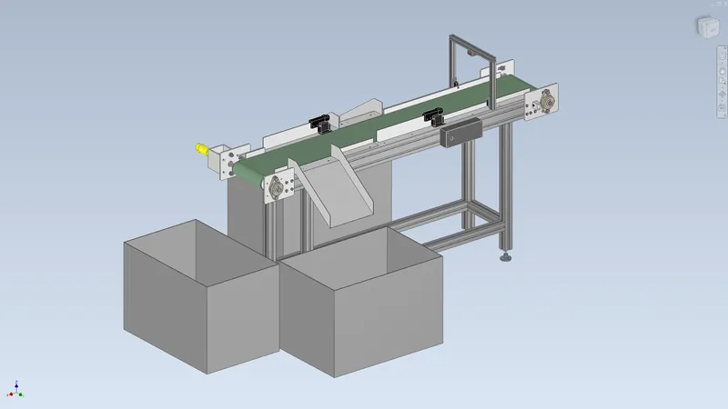
- Cartons sorted, simulated
- 1858/h
- Belt speed
- 0.25m/s
- Drive torque margin
- 7.0x
- Parts in assembly
- 104
01Overview
A bench-scale sorting conveyor for cartons from 50 to 180 mm long and up to 1.5 kg. A 200 mm PVC belt runs at 0.25 m/s over 60 mm crowned pulleys on a 40-series aluminium frame. Each carton passes a sensor gantry first: a through-beam sensor times its length against the belt encoder and a VL53L1X time-of-flight sensor reads its height. An Arduino then sorts it into small, medium or large. Two servo-driven paddles swing 40 degrees across the belt to push small and medium cartons down chutes into totes; large ones run off the end.
The drive is a 12 V goBILDA planetary gearmotor coupled straight to the head pulley, and the tail pulley sits in ±15 mm take-up slots. Every part, calculation and the sort simulation read one design file. Three Inventor parameters drive the assembly (TakeUp, Divert1, Divert2), and interference checks run at 10 poses. Designed and simulated only; nothing has been built.
Tools Autodesk Inventor 2027 / Python / NumPy / Matplotlib / Bambu Studio
What I did
- Worked out why a paddle diverts at all: belt friction on the carton points across the paddle, so the carton slides along it at V(cos 40 - 0.25 sin 40) = 0.15 m/s. That set the push-off time and the gap between cartons.
- Wrote a timing model and a Monte Carlo sort of 4000 random cartons with sensor noise. The gap it needs (375 mm) agrees with the hand calculation (360 mm).
- Found the sensor gantry too low for the tallest carton with a scripted clearance check and raised it, then re-ran the full interference sweep.
- Made the drawings by script but checked every auto-dimension against the real part size. That caught wrong shaft lengths (427.5 instead of 411 mm), which were fixed before the drawings were published.
Specification
- Cartons
- 50-180 mm long, up to 150 mm wide, 30-150 mm tall, up to 1.5 kg; small / medium / large by length and height
- Belt
- 200 x 2 mm two-ply PVC, 3195 mm loop, 0.25 m/s; 60 mm crowned 6061 pulleys at 1500 mm centres; 3 mm 5052 slider bed
- Drive
- goBILDA 5203 50.9:1 gearmotor (12 V, 117 rpm, 6.71 Nm stall) direct to the head shaft through an L-070 jaw coupling; UCFL204 bearings on 20 mm 1045 shafts
- Sensing
- Omron E3Z-class through-beam 15 mm above the belt plus a VL53L1X ToF on a 2020 gantry; length from the 1425 PPR encoder (0.14 mm per count)
- Diverters
- 2 x Savox SB-2290SG servos (50 kg cm at 7.4 V), 301 x 60 x 3 mm 6061 paddles on printed PA6-CF hubs, 40 degree throw
- Frame
- 40x80 side rails, 40x40 legs and braces, 6 mm 6061 end plates, 35 degree 1.5 mm 5052 chutes, 600 x 400 x 420 totes
- Mass (Inventor)
- 32.7 kg machine plus 7.2 kg of totes; about 1.1 kg of electrical parts not modelled
- Assembly
- 104 occurrences, 42 unique files, 309 constraints, 0 DOF; 9 printed parts on two Bambu plates (PA6-CF and PETG)
02Design decisions4 changes
- 01
Raised the sensor gantry 80 mm
- Finding
- A clearance check over the item channel showed the ToF sensor 127.8 mm above the belt, below the 150 mm item height limit. The VL53L1X also cannot range closer than 40 mm.
- Action
- Lengthened the gantry posts from 150 to 230 mm and rebuilt the sensor head and assembly.
- Outcome
- Sensor now 207.8 mm above the belt (57.8 mm range at the tallest carton); 0 DOF and 0 clashes re-checked.
- 02
Floor anchors on the drawing
- Finding
- With a 270 mm foot track and the CG 600 mm up, the 32.7 kg frame tips over with a 54 N sideways push at belt height.
- Action
- Called for four M8 floor anchors on the assembly drawing.
- Outcome
- A 300 N side push puts 341 N of uplift on each anchor, SF 12.
- 03
Kept the jaw coupling, added a stall cut-off
- Finding
- The L-070 coupling is rated 4.88 Nm, below the 6.71 Nm motor stall torque.
- Action
- Checked the worst real load instead: a jam with 7 cartons held gives 2.87 Nm (SF 1.70). The firmware stops the motor on an encoder stall; an L-075 (10.2 Nm) is the drop-in upgrade.
- 04
Gap between cartons set by the paddle sweep
- Finding
- A carton passing straight on has to be clear of the paddle's whole 345 mm swing before the paddle starts to move.
- Action
- Derived a 360 mm minimum gap and checked it with a Monte Carlo sort of 4000 random cartons.
- Outcome
- Every carton reaches the right bin mechanically from 375 mm on; the design uses 370 mm, giving 1858 cartons per hour.
03Views8 renders


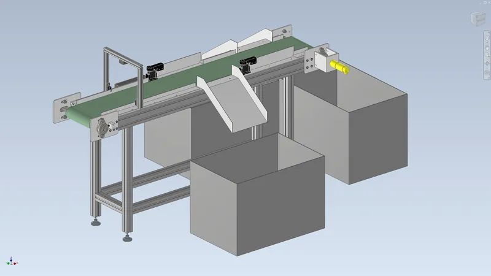

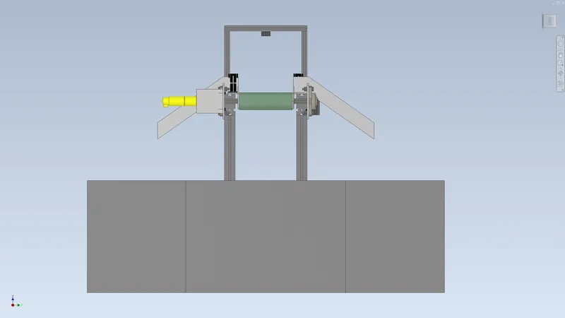

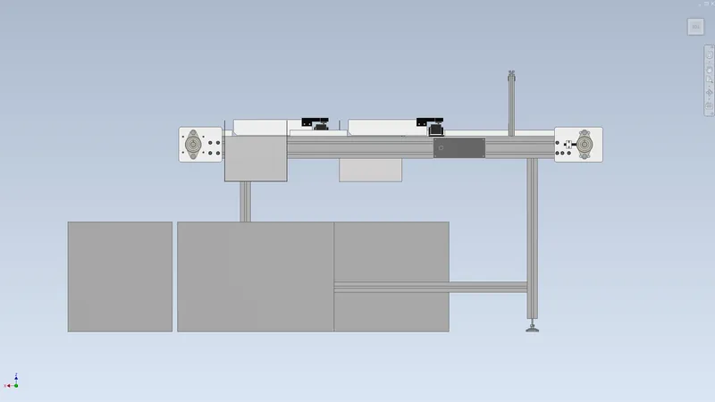

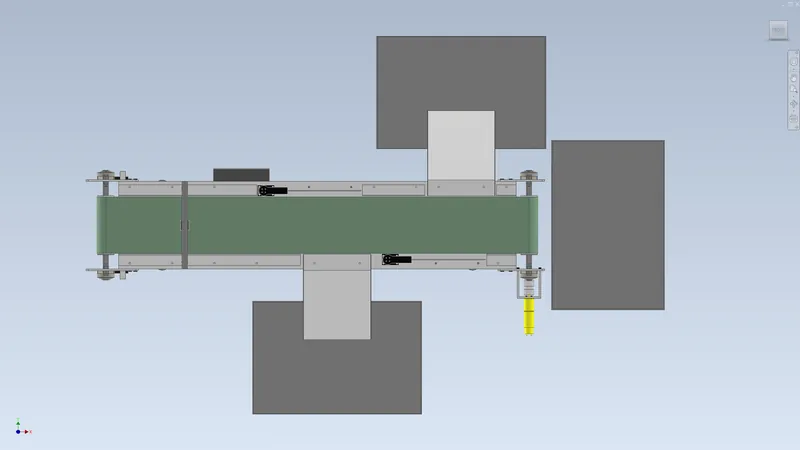

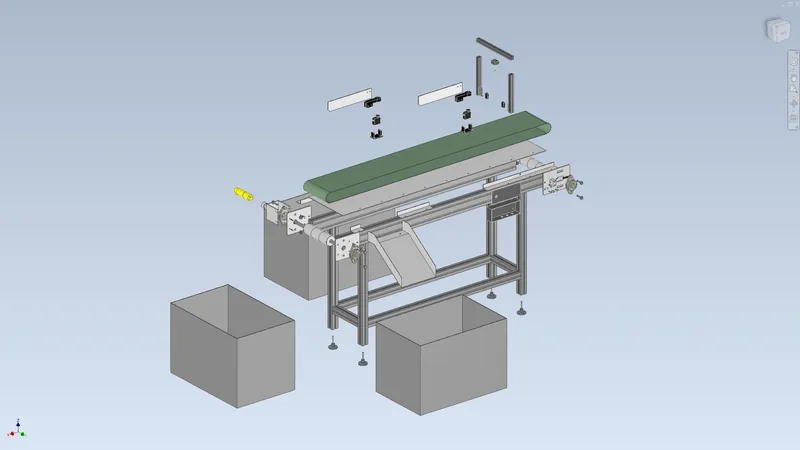

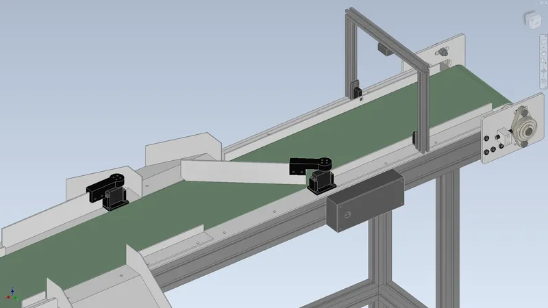

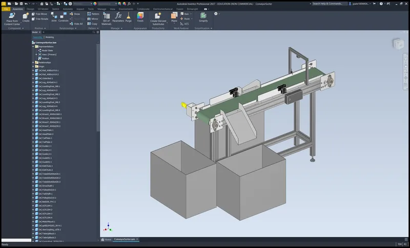
04Drawings6 sheets

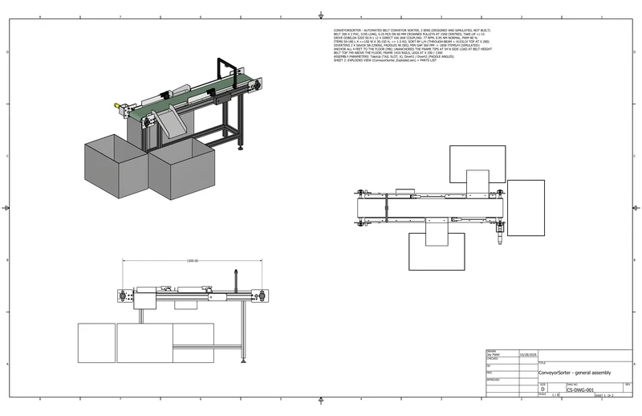

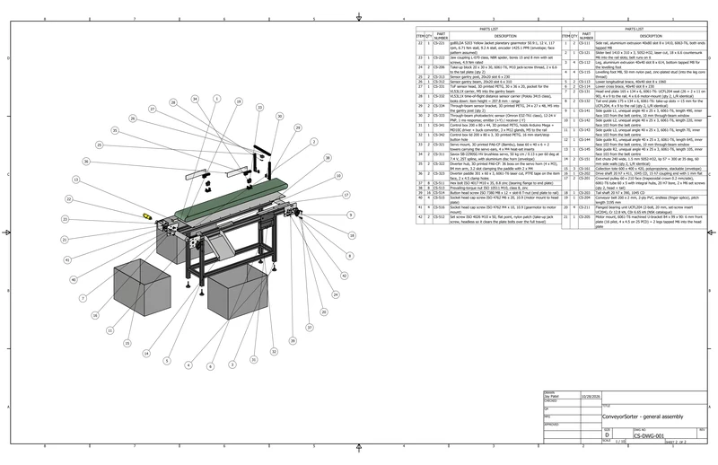

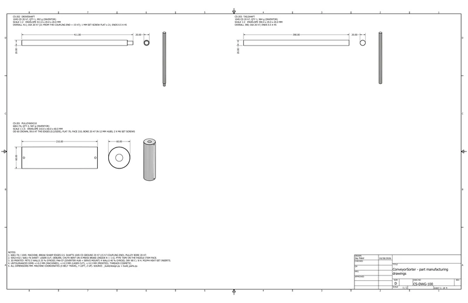

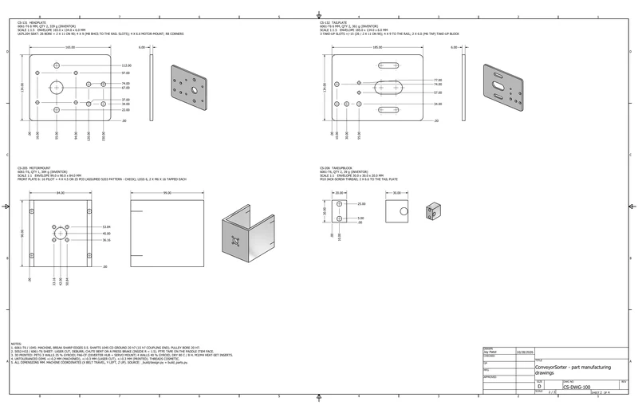

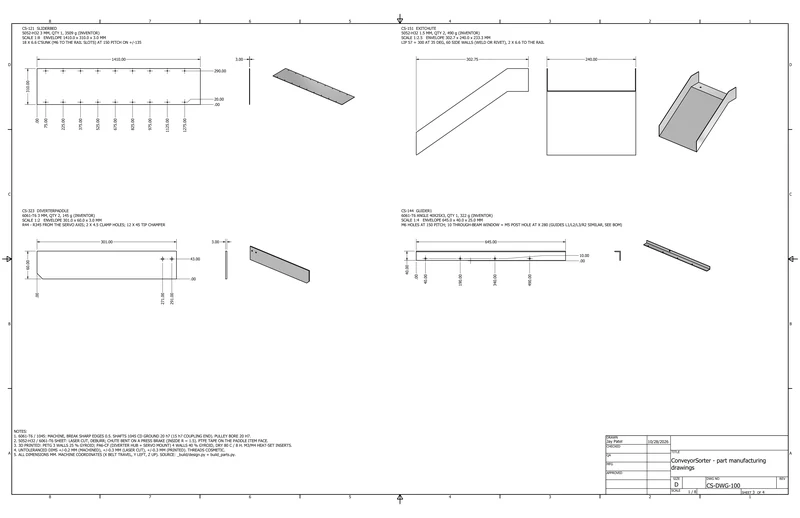

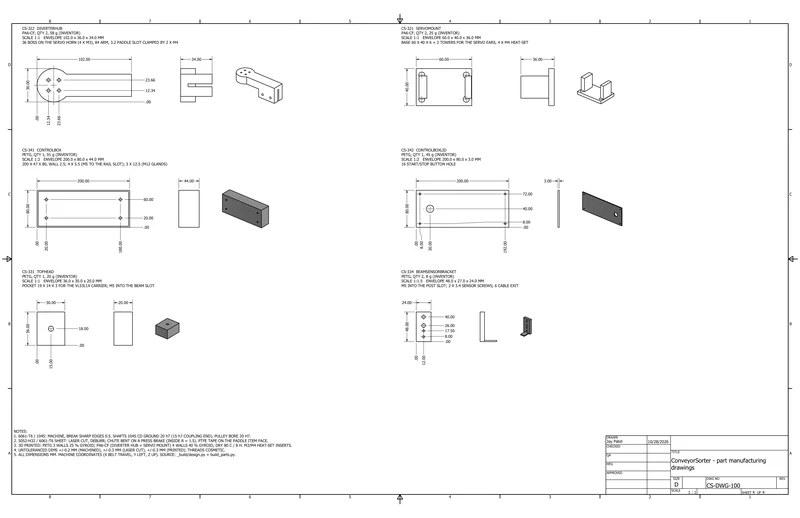
05Analysissimulated unless stated
A1 Drive

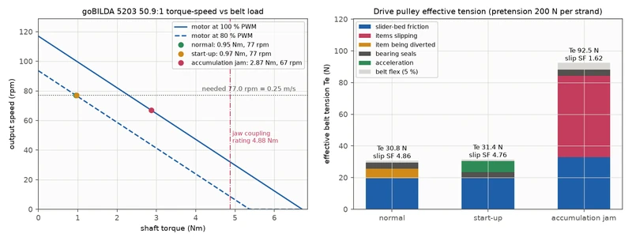
A2 Sorting

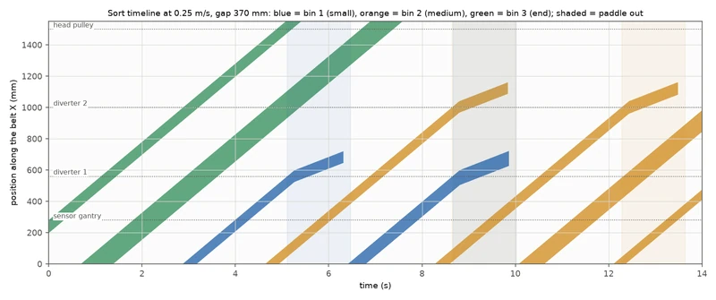

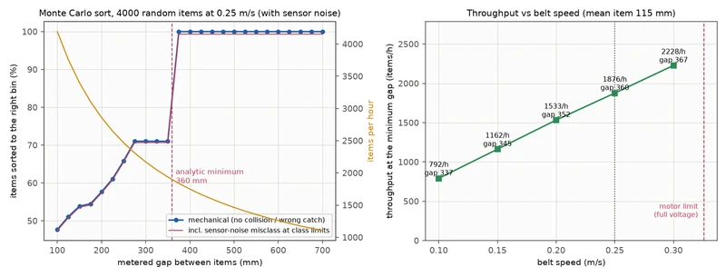
A3 Frame

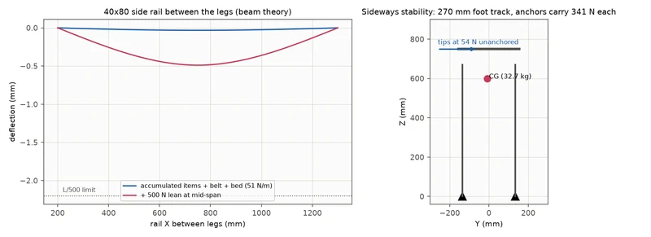
06Results8 checks
| Check | Result | Margin / status |
|---|---|---|
| Drive torque | 0.95 Nm at 77 rpm in normal running (80% PWM, 1.5 A); 7.0x below stall | Calculated |
| Jam case | 7 cartons held on the belt: 2.87 Nm, the motor saturates and the belt slows to 0.22 m/s; no belt slip (SF 1.6) | Calculated |
| Diverting | A carton slides along the 40 degree paddle at 0.15 m/s and is off the belt in 1.06 s; works for paddle angles up to 76 degrees | Calculated |
| Servo load | 2.29 Nm to hold a 1.5 kg carton (SF 2.1), 3.28 Nm peak on impact (SF 1.5) | Calculated |
| Sort rate | 1858 cartons per hour at a 370 mm gap; 100% reach the right bin mechanically, 0.68% misread because they sit within about 1 mm of a size limit | Simulated, 4000 cartons |
| Shafts and bearings | 19.7 MPa bending in the 20 mm shafts, fatigue SF 5.7, 0.14 mm deflection; bearing load 200 N | Calculated |
| Frame | 0.49 mm rail deflection with a jam load and a 500 N lean (limit 2.2 mm) | Calculated |
| Interference | 0 clashing pairs at 10 poses across both paddle sweeps and the full take-up travel | Checked in Inventor |
07Parts list60 lines, $2,832.75
From the project's bill of materials (ConveyorSorter_BOM.csv), grouped by how you get each part. Quantities are from the CAD assembly. Prices marked Confirmed were checked against a vendor listing; Est. prices are estimates. Designed and calculated, not built.
- Buy · 89 pcs
- 28lines
- Print · 9 pcs
- 6lines
- Fabricate · 21 pcs
- 15lines
- Hardware · 67 pcs
- 11lines
- Confirmed
- $127.84 4.5%
- Est.
- $2,704.91 95.5%
Complete per the buildability check: every part it lists for a working build is in this BOM. Open items are below.
P1 Buy purchased and vendor parts · 28 lines, 89 pcs
| Qty | Part no. | Description | Unit | Line |
|---|---|---|---|---|
| 2 off | CS-111 | Side rail, aluminium extrusion 40x80 slot 8 x 1410, 6063-T6, both ends tapped M8Source: Misumi HFS8 / item 8 (cut to length, ends tapped) · Material: Aluminium 6063-T6 extrusionPrice: Misumi HFS8-4080 class (~$80/m) cut to 1410, both ends tapped M8 | $115.00 | $230.00Est.2 × $115.00 |
| 4 off | CS-112 | Leg, aluminium extrusion 40x40 slot 8 x 614, bottom tapped M8 for the levelling footSource: Misumi HFS8 / item 8 (cut to length, ends tapped) · Material: Aluminium 6063-T6 extrusionPrice: Misumi HFS8-4040 class (~$35/m) cut to 614, one end tapped M8 | $30.00 | $120.00Est.4 × $30.00 |
| 2 off | CS-113 | Lower longitudinal brace, 40x40 slot 8 x 1060Source: Misumi HFS8 / item 8 (cut to length, ends tapped) · Material: Aluminium 6063-T6 extrusionPrice: Misumi HFS8-4040 class cut to 1060, ends tapped | $45.00 | $90.00Est.2 × $45.00 |
| 2 off | CS-114 | Lower cross brace, 40x40 slot 8 x 230Source: Misumi HFS8 / item 8 (cut to length, ends tapped) · Material: Aluminium 6063-T6 extrusionPrice: Misumi HFS8-4040 class cut to 230, ends tapped | $14.00 | $28.00Est.2 × $14.00 |
| 4 off | CS-115 | Levelling foot M8, 50 mm nylon pad, zinc-plated stud (into the leg core thread)Source: Misumi GFA / item levelling foot class · Material: Steel, zinc plated (class 8.8)Price: Misumi GFA / McMaster M8 levelling foot, 50 mm pad class | $6.00 | $24.00Est.4 × $6.00 |
| 1 off | CS-204 | Conveyor belt 200 x 2 mm, 2-ply PVC, endless (finger splice), pitch length 3195 mmSource: Habasit / Ammeraal light PVC class · Material: PVC belt (2-ply)Price: custom endless 200 mm light PVC belt, 3195 mm (Habasit/Ammeraal class, splice incl.) | $150.00 | $150.00Est.1 × $150.00 |
| 4 off | CS-211 | Flanged bearing unit UCFL204 (2-bolt, 20 mm, set-screw insert UC204), Cr 12.8 kN, C0r 6.65 kN (NSK catalogue)Source: NSK / FYH UCFL204 · Material: Cast iron (housing)Price: UCFL204 flange unit, Amazon / VXB class ~$10-15 | $12.00 | $48.00Est.4 × $12.00 |
| 1 off | CS-222 | Jaw coupling L-070 class, NBR spider, bores 15 and 8 mm with set screws, 4.9 Nm ratedSource: Lovejoy L-070 / Ruland class · Material: Aluminium 6061-T6Price: Lovejoy L070 2 hubs (~$14 each, L075 hubs list $17.01 at Motion) + NBR spider (~$5) | $34.00 | $34.00Est.1 × $34.00 |
| 1 off | CS-312 | Sensor gantry beam, 20x20 slot 6 x 310Source: Misumi HFS8 / item 8 (cut to length, ends tapped) · Material: Aluminium 6063-T6 extrusionPrice: Misumi HFS5/6 20x20 class (~$13/m) cut to 310, tapped | $9.00 | $9.00Est.1 × $9.00 |
| 2 off | CS-313 | Sensor gantry post, 20x20 slot 6 x 230Source: Misumi HFS8 / item 8 (cut to length, ends tapped) · Material: Aluminium 6063-T6 extrusionPrice: Misumi HFS5/6 20x20 class cut to 230, tapped | $8.00 | $16.00Est.2 × $8.00 |
| 3 off | CS-161 | Collection tote 600 x 400 x 420, polypropylene, stackable (envelope)Source: Schaefer / Akro-Mils class · Material: Polypropylene (tote)Price: 600x400x420 PP stackable tote (Schaefer/Akro-Mils class $28-45) | $35.00 | $105.00Est.3 × $35.00 |
| 1 off | CS-221 | goBILDA 5203 Yellow Jacket planetary gearmotor 50.9:1, 12 V, 117 rpm, 6.71 Nm stall, 9.2 A stall, encoder 1425.1 PPR (envelope; face pattern assumed)Source: goBILDA 5203-2402-0051 · Material: Aluminium (motor)Price: (listing): goBILDA https://www.gobilda.com/5203-series-yellow-jacket-planetary-gear-motor-50-9-1-ratio-24mm-length-8mm-rex-shaft-117-rpm-3-3-5v-encoder/ (SKU 5203-2402-0051), $54.99 (checked 2026-10-29) | $54.99 | $54.99Confirmed1 × $54.99 |
| 2 off | CS-311 | Savox SB-2290SG HV brushless servo, 50 kg cm / 0.13 s per 60 deg at 7.4 V, 25T spline, with aluminium disc horn (envelope)Source: Savox SB-2290SG · Material: ABS PlasticPrice: Savox SB-2290SG retailer listings seen in search 2026-10-29: $136.95 (reach.dog) to $148.95 (Gator-RC / eBay); price page not read | $137.00 | $274.00Est.2 × $137.00 |
| 1 off | CS-332 | VL53L1X time-of-flight distance sensor carrier (Pololu 3415 class), looks down: item height = 207.8 mm - rangeSource: Pololu 3415 · Material: PCBPrice: (listing): Pololu https://www.pololu.com/product/3415, $22.95 (1 pc; $21.11 at 5+) (checked 2026-10-29) | $22.95 | $22.95Confirmed1 × $22.95 |
| 2 off | CS-333 | Through-beam photoelectric sensor (Omron E3Z-T61 class), 12-24 V PNP, 1 ms response; emitter (+Y) / receiver (-Y)Source: Omron E3Z-T61 class · Material: ABS PlasticPrice: E3Z-T61 is an emitter+receiver set, ~$181 Avnet / ~$201 Standard Electric Supply per set in search 2026-10-29, so ~$90 per sensor (BOM qty 2 = one set) | $90.00 | $180.00Est.2 × $90.00 |
| 1 off | CS-601 | Arduino Mega 2560 Rev3 controllerNot in CADSource: ArduinoPrice: (listing): Arduino Store USA https://store-usa.arduino.cc/products/arduino-mega-2560-rev3 (SKU A000067), $49.90 (checked 2026-10-29) | $49.90 | $49.90Confirmed1 × $49.90 |
| 1 off | CS-602 | Cytron MD10C 13 A brushed DC motor driverNot in CADSource: CytronPrice: Cytron MD10C R3 (EUR 13.50 Botland; US resellers ~$20-25), cytron.io page not readable | $22.00 | $22.00Est.1 × $22.00 |
| 1 off | CS-603 | 12 V 10 A DIN-rail power supply (Mean Well class)Not in CADSource: Mean WellPrice: Mean Well DR-120-12 / HDR-100-12 class 12 V 10 A DIN supply | $40.00 | $40.00Est.1 × $40.00 |
| 1 off | CS-604 | 7.4 V 10 A buck converter for the two servosNot in CADSource: Pololu / DROK classPrice: Pololu / DROK 7.4 V 10 A buck converter class | $15.00 | $15.00Est.1 × $15.00 |
| 1 off | CS-605 | E-stop mushroom button + 24 V-rated contactor for the motor supplyNot in CADSource: Schneider / classPrice: Schneider E-stop mushroom (~$25) + 24 V contactor (~$30) | $55.00 | $55.00Est.1 × $55.00 |
| 1 off | CS-606 | Wiring, connectors, cable glands (estimate)Not in CADPrice: wiring, connectors, cable glands | $30.00 | $30.00Est.1 × $30.00 |
| 4 off | CS-521 | Floor anchor M8 wedge anchor 8 x 75 zinc (unanchored, the frame tips at 54 N sideways at belt height)Not in CADSource: Fischer FAZ II / Hilti HST3 class · Material: Steel zincPrice: Fischer FAZ II / Hilti HST3 M8x75 wedge anchor, per piece | $2.00 | $8.00Est.4 × $2.00 |
| 18 off | CS-522 | Countersunk screw ISO 10642 M6 x 12, 10.9 black oxide (slider bed CS-121 to the rails)Not in CADSource: ISO 10642 (McMaster / Misumi) · Material: Steel 10.9Price: McMaster ISO 10642 M6x12 10.9 black oxide, per piece from a pack | $0.35 | $6.30Est.18 × $0.35 |
| 18 off | CS-523 | T-nut slot 8 M6, drop-in (slider bed screws into the 40x80 rail slots)Not in CADSource: Misumi / item slot-8 class · Material: Steel zincPrice: Misumi slot-8 M6 drop-in T-nut class, per piece | $0.35 | $6.30Est.18 × $0.35 |
| 8 off | CS-524 | Heat-set insert M4 brass (4 per servo mount CS-321)Not in CADSource: Ruthex / McMaster-Carr · Material: BrassPrice: Ruthex M4 brass heat-set insert, pack of 100 ~$12 | $0.15 | $1.20Est.8 × $0.15 |
| 1 off | CS-530 | Start / stop push button 16 mm, momentary, IP65 (control-box lid CS-342 hole)Not in CADSource: Generic 16 mm (APEM / Ulincos class) · Material: -Price: 16 mm IP65 momentary push button (APEM / Ulincos class) | $5.00 | $5.00Est.1 × $5.00 |
| 1 off | CS-531 | PA6-CF filament 1 kg spool (servo mounts CS-321 + diverter hubs CS-322)Not in CADSource: Bambu Lab / Polymaker · Material: PA6-CFPrice: 1 kg PA6-CF spool (Polymaker / Bambu class ~$55-65) | $60.00 | $60.00Est.1 × $60.00 |
| 1 off | CS-532 | PETG filament 1 kg spool (ToF head, beam-sensor brackets, control box + lid)Not in CADSource: Bambu Lab / Polymaker · Material: PETGPrice: 1 kg PETG spool (Bambu / Polymaker ~$20) | $20.00 | $20.00Est.1 × $20.00 |
| Buy subtotal | $1,704.64 | |||
P2 Print 3D-printed parts · 6 lines, 9 pcs
| Qty | Part no. | Description | Unit | Line |
|---|---|---|---|---|
| 2 off | CS-321 | Servo mount, 3D printed PA6-CF (Bambu), base 60 x 40 x 6 + 2 towers carrying the servo ears, 4 x M4 heat-set insertsSource: Printed in-house (Bambu Lab, PA6-CF) · Material: PA6-CF (3D printed, 4 walls, 40% gyroid) | Incl. | |
| 2 off | CS-322 | Diverter hub, 3D printed PA6-CF: 36 boss on the servo horn (4 x M3), 84 mm arm, 3.2 slot clamping the paddle with 2 x M4Source: Printed in-house (Bambu Lab, PA6-CF) · Material: PA6-CF (3D printed, 4 walls, 40% gyroid) | Incl. | |
| 1 off | CS-331 | ToF sensor head, 3D printed PETG, 30 x 36 x 20, pocket for the VL53L1X carrier, M5 into the gantry beamSource: Printed in-house (Bambu Lab, PETG) · Material: PETG (3D printed, 3 walls, 25% gyroid) | Incl. | |
| 2 off | CS-334 | Through-beam sensor bracket, 3D printed PETG, 24 x 27 x 48, M5 into the gantry post (qty 2)Source: Printed in-house (Bambu Lab, PETG) · Material: PETG (3D printed, 3 walls, 25% gyroid) | Incl. | |
| 1 off | CS-341 | Control box 200 x 80 x 44, 3D printed PETG, holds Arduino Mega + MD10C driver + buck converter, 3 x M12 glands, M5 to the railSource: Printed in-house (Bambu Lab, PETG) · Material: PETG (3D printed, 3 walls, 25% gyroid) | Incl. | |
| 1 off | CS-342 | Control box lid 200 x 80 x 3, 3D printed PETG, 16 mm start/stop button holeSource: Printed in-house (Bambu Lab, PETG) · Material: PETG (3D printed, 3 walls, 25% gyroid) | Incl. | |
| Print subtotal | $0.00 | |||
P3 Fabricate machined, welded and cut parts · 15 lines, 21 pcs
| Qty | Part no. | Description | Unit | Line |
|---|---|---|---|---|
| 2 off | CS-131 | Head end plate 165 x 134 x 6, 6061-T6: UCFL204 seat (26 + 2 x 11 on 90), 4 x 9 to the rail, 4 x 6.6 motor-mount (qty 2, L/R identical)Source: Machined in-house · Material: Aluminium 6061-T6Price: one-off outside job-shop price (material + machining), 6061-T6 165x134x6 plate, ~15 holes + seat | $55.00 | $110.00Est.2 × $55.00 |
| 2 off | CS-132 | Tail end plate 175 x 134 x 6, 6061-T6: take-up slots ±15 mm for the UCFL204, 4 x 9 to the rail (qty 2, L/R identical)Source: Machined in-house · Material: Aluminium 6061-T6Price: one-off outside job-shop price (material + machining), 6061-T6 175x134x6 plate, slots | $60.00 | $120.00Est.2 × $60.00 |
| 1 off | CS-141 | Side guide L1, unequal angle 40 x 25 x 3, 6061-T6, length 490, inner face 103 from the belt centre, 10 mm through-beam windowSource: Machined in-house · Material: Aluminium 6061-T6Price: one-off outside job-shop price (material + machining), 6061-T6 40x25x3 angle x490 with 10 mm window (McMaster angle ~$10 + machining) | $30.00 | $30.00Est.1 × $30.00 |
| 1 off | CS-142 | Side guide L2, unequal angle 40 x 25 x 3, 6061-T6, length 220, inner face 103 from the belt centreSource: Machined in-house · Material: Aluminium 6061-T6Price: one-off outside job-shop price (material + machining), 6061-T6 40x25x3 angle x220 | $18.00 | $18.00Est.1 × $18.00 |
| 1 off | CS-143 | Side guide L3, unequal angle 40 x 25 x 3, 6061-T6, length 70, inner face 103 from the belt centreSource: Machined in-house · Material: Aluminium 6061-T6Price: one-off outside job-shop price (material + machining), 6061-T6 40x25x3 angle x70 | $12.00 | $12.00Est.1 × $12.00 |
| 1 off | CS-144 | Side guide R1, unequal angle 40 x 25 x 3, 6061-T6, length 645, inner face 103 from the belt centre, 10 mm through-beam windowSource: Machined in-house · Material: Aluminium 6061-T6Price: one-off outside job-shop price (material + machining), 6061-T6 40x25x3 angle x645 with window | $34.00 | $34.00Est.1 × $34.00 |
| 1 off | CS-145 | Side guide R2, unequal angle 40 x 25 x 3, 6061-T6, length 105, inner face 103 from the belt centreSource: Machined in-house · Material: Aluminium 6061-T6Price: one-off outside job-shop price (material + machining), 6061-T6 40x25x3 angle x105 | $14.00 | $14.00Est.1 × $14.00 |
| 2 off | CS-201 | Crowned pulley 60 x 210 face (trapezoidal crown 0.2 mm/side), 6061-T6 tube 60 x 5 with integral hubs, 20 H7 bore, 2 x M6 set screws (qty 2, head + tail)Source: Machined in-house · Material: Aluminium 6061-T6Price: one-off outside lathe job (6061 tube 60x5, integral hubs, bore + crown) | $120.00 | $240.00Est.2 × $120.00 |
| 1 off | CS-202 | Drive shaft 20 h7 x 411, 1045 CD, 15 h7 coupling end with 1 mm flatSource: Machined in-house · Material: AISI 1045 CD (shaft)Price: one-off outside job-shop price, 1045 CD 20 mm bar (~$20) + turning/flat | $55.00 | $55.00Est.1 × $55.00 |
| 1 off | CS-203 | Tail shaft 20 h7 x 390, 1045 CDSource: Machined in-house · Material: AISI 1045 CD (shaft)Price: one-off outside job-shop price, 1045 CD 20 mm bar (~$18) + turning | $40.00 | $40.00Est.1 × $40.00 |
| 1 off | CS-205 | Motor mount, 6061-T6 machined U-bracket 84 x 99 x 90: 6 mm front plate (16 pilot, 4 x 4.5 on 25 PCD) + 2 legs tapped M6 into the head plateSource: Machined in-house · Material: Aluminium 6061-T6Price: one-off outside job-shop price (material + machining), 6061-T6 U-bracket 84x99x90, pilot + 6 holes + 2 tapped legs | $95.00 | $95.00Est.1 × $95.00 |
| 2 off | CS-206 | Take-up block 20 x 30 x 30, 6061-T6, M10 jack-screw thread, 2 x 6.6 to the tail plate (qty 2)Source: Machined in-house · Material: Aluminium 6061-T6Price: one-off outside job-shop price (material + machining), 6061-T6 20x30x30 block, M10 thread | $22.00 | $44.00Est.2 × $22.00 |
| 1 off | CS-121 | Slider bed 1410 x 310 x 3, 5052-H32, laser cut, 18 x 6.6 countersunk M6 into the rail slots; belt runs on itSource: Laser cut (SendCutSend class) · Material: Aluminium 5052-H32 sheetPrice: SendCutSend-class laser cut 5052-H32 3 mm, 1410x310 (~677 in2) with 18 countersunk holes | $170.00 | $170.00Est.1 × $170.00 |
| 2 off | CS-151 | Exit chute 240 wide, 1.5 mm 5052-H32, lip 57 + 300 at 35 deg, 60 mm side walls (qty 2, L/R identical)Source: Laser cut + press brake · Material: Aluminium 5052-H32 sheetPrice: SendCutSend-class laser cut + 2 bends, 5052-H32 1.5 mm | $38.00 | $76.00Est.2 × $38.00 |
| 2 off | CS-323 | Diverter paddle 301 x 60 x 3, 6061-T6 laser cut, PTFE tape on the item face, 2 x 4.5 clamp holesSource: Laser cut (SendCutSend class) · Material: Aluminium 6061-T6Price: SendCutSend-class laser cut 6061-T6 3 mm 301x60 | $20.00 | $40.00Est.2 × $20.00 |
| Fabricate subtotal | $1,098.00 | |||
P4 Hardware fasteners, pins, keys, rings · 11 lines, 67 pcs
| Qty | Part no. | Description | Unit | Line |
|---|---|---|---|---|
| 8 off | CS-511 | Hex bolt ISO 4017 M10 x 35, 8.8 zinc (bearing flange to end plate)Source: ISO 4017 / ISO 4762 (McMaster / Misumi) · Material: Steel, zinc plated (class 8.8)Price: McMaster / Misumi M10x35 8.8 zinc hex bolt | $0.60 | $4.80Est.8 × $0.60 |
| 2 off | CS-512 | Set screw ISO 4026 M10 x 50, flat point, nylon patch (take-up jack screw, headless so it clears the plate bolts over the full travel)Source: ISO 4026 (McMaster / Misumi) · Material: Steel, zinc plated (class 8.8)Price: McMaster M10x50 flat-point nylon-patch set screw | $1.20 | $2.40Est.2 × $1.20 |
| 8 off | CS-513 | Prevailing-torque nut ISO 10511 M10, class 8, zincSource: ISO 10511 · Material: Steel, zinc plated (class 8.8)Price: McMaster M10 prevailing-torque nut | $0.25 | $2.00Est.8 × $0.25 |
| 16 off | CS-514 | Button head screw ISO 7380 M8 x 12 + slot-8 T-nut (end plate to rail)Source: ISO 7380 / ISO 4762 class 10.9 black oxide · Material: Steel, zinc plated (class 8.8)Price: McMaster ISO 7380 M8x12 (~$0.35) + Misumi slot-8 T-nut (~$0.40) | $0.75 | $12.00Est.16 × $0.75 |
| 4 off | CS-515 | Socket head cap screw ISO 4762 M6 x 20, 10.9 (motor mount to head plate)Source: ISO 7380 / ISO 4762 class 10.9 black oxide · Material: Steel, zinc plated (class 8.8)Price: McMaster M6x20 SHCS 10.9 | $0.30 | $1.20Est.4 × $0.30 |
| 4 off | CS-516 | Socket head cap screw ISO 4762 M4 x 10, 10.9 (gearmotor to motor mount)Source: ISO 7380 / ISO 4762 class 10.9 black oxide · Material: Steel, zinc plated (class 8.8)Price: McMaster M4x10 SHCS 10.9 | $0.15 | $0.60Est.4 × $0.15 |
| 8 off | CS-525 | Socket head cap screw ISO 4762 M4 x 12 (servo ears into the CS-321 inserts)Not in CADSource: ISO 4762 (McMaster / Misumi) · Material: A2 stainlessPrice: McMaster A2 M4x12 SHCS, per piece | $0.20 | $1.60Est.8 × $0.20 |
| 8 off | CS-526 | Socket head cap screw ISO 4762 M3 x 8 (diverter hub CS-322 to the aluminium servo horn, 4 per hub)Not in CADSource: ISO 4762 (McMaster / Misumi) · Material: A2 stainlessPrice: McMaster A2 M3x8 SHCS, per piece | $0.12 | $0.96Est.8 × $0.12 |
| 4 off | CS-527 | Socket head cap screw ISO 4762 M4 x 16 + nylon-insert nut M4 (paddle clamp, 2 per hub CS-322)Not in CADSource: ISO 4762 (McMaster / Misumi) · Material: A2 stainlessPrice: McMaster A2 M4x16 SHCS + nyloc M4, per set | $0.45 | $1.80Est.4 × $0.45 |
| 3 off | CS-528 | Socket head cap screw ISO 4762 M5 x 10 + slot-6 T-nut M5 (ToF head CS-331 and the two beam-sensor brackets CS-334 to the 20x20 gantry)Not in CADSource: ISO 4762 + Misumi slot-6 T-nut · Material: Steel zincPrice: M5x10 SHCS + Misumi slot-6 T-nut, per set | $0.55 | $1.65Est.3 × $0.55 |
| 2 off | CS-529 | Socket head cap screw ISO 4762 M5 x 12 + slot-8 T-nut M5 (control box CS-341 to the 40x80 rail)Not in CADSource: ISO 4762 + Misumi slot-8 T-nut · Material: Steel zincPrice: M5x12 SHCS + Misumi slot-8 T-nut, per set | $0.55 | $1.10Est.2 × $0.55 |
| Hardware subtotal | $30.11 | |||
P5 What else you need to make it work
From Tests/Buildability/buildability_check.md (2026-10-29). Verdict: BUILDABLE, with five things to settle before ordering.
Change before buying
- Jaw coupling CS-222 (L-070, 4.88 Nm) is below the 6.71 Nm motor stall; the L-075 upgrade (10.2 Nm) does not drop in: its hub is 9.9 mm larger and the CAD has only 2.0 mm to the gearmotor's M4 heads, so the motor mount needs a ~5 mm longer stand-off. Until then keep the L-070 with the encoder stall cut-off.
- Through-beam sensor CS-333 (Omron E3Z-T61) is sold as an emitter + receiver set: qty 2 in the BOM = 1 set.
Also needed
- Stability
- Anchor the frame (CS-521, 4 x M8): unanchored it tips at 54 N at belt height. Outrigger feet (the other respec option) are not modelled.
- Firmware
- Arduino Mega code for the ToF / through-beam sort decision and the servo timing, with the encoder stall cut-off above. Firmware and wiring are not modelled.
- Not included
- A metering infeed (not modelled) sets the 370 mm item gap the sort simulation assumes.
Now in the BOM: 4 x M8 floor anchors; 18 x M6 countersunk screws + slot-8 T-nuts holding the slider bed to the rails; M4 heat-set inserts; Diverter hub screws; M5 screws + T-nuts for the ToF head, the two beam-sensor brackets and the control box; 16 mm start / stop push button for the control-box lid.
Cost in the buildability file: BOM $2,832.75 incl. the fixings, button and filament added in the 2026-10-29 audit ($127.84 confirmed, the rest estimates incl. one-off machining).
- Download BOM (CSV)CSV · 19 kB
- Buildability checkMD · 7 kB
08Files8 downloads
- Calculation reportPDF · 498 kB
- Assembly drawingPDF · 453 kB
- Manufacturing drawingsPDF · 300 kB
- Bill of materialsCSV · 19 kB
- Test summaryMD · 6 kB
- Assembly STEPSTP · 1.3 MB
- Print plate 1, PA6-CF3MF · 125 kB
- Print plate 2, PETG3MF · 48 kB
09Limits and assumptionsread before quoting a number
Designed and simulated only: the conveyor has not been built, and every number is a model prediction. Belt, motor, servo and sensor values are catalogue or datasheet figures; the motor's rotor inertia and face pattern are assumed. Friction values (belt on bed, carton on belt and paddle) are typical class values. The carton gap assumes a metering infeed, which is not modelled. Stresses are low (25 MPa at most, in the paddle), so beam theory is used instead of FEA. Electrical wiring and firmware are not modelled.